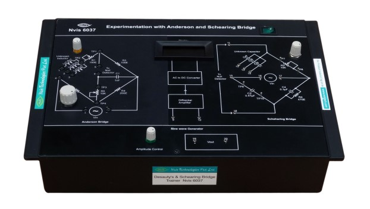

Experimentation with De Sauty's and Schearing Bridge
Nvis 6037

De Sauty's and Schearing Bridge
De Sauty's and Schearing Bridge
Nvis 6037 Experimentation with De Sauty’s and Schearing Bridge is useful for measuring very small value of Capacitance. By setting the null point, we can evaluate the unknown capacitance. To set this point, null detector with amplifier circuit is implemented on platform board. Nvis 6037 is based on the principle of Wheat Stone Bridge. A Function Generator is provided for Frequency and Amplitude variation. Null detector section includes differential amplifier.
Features
- A Complete set up with all necessary accessories
- Inbuilt 1 kHz sine wave generator with variable amplitude
- Null detector with DPM
Technical Specifications
- Sine Wave Generator
- Frequency range : 1kHz ±10%
- Amplitude control output :Up to 15Vpp
- Fuse : 500 mA, S/B
- DPM : 200 mV
- Unknown Capacitor : 0.1µF, 0.22µF, 0.47µF
- Mains Supply : 230V AC, ±10%, 50Hz
- Dimension (mm) : W 345 x D 240 x H 110
Scope Of Learning
- Determination of unknown capacitance using De Sauty’s Bridge method
- Determination of unknown capacitance using Schearing Bridge method
To download the manual click here